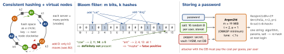
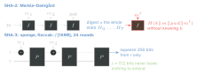

cs · folio
In one line: A hash maps any input to a fixed-size value. Table hashes want speed, spread and a secret seed against flooding (SipHash); cryptographic hashes want preimage and collision resistance (SHA-256, SHA-3); password hashes want to be slow and memory-hard (Argon2id); a MAC needs a key (HMAC). Collisions always exist — the question is only what it costs to find one.
Download PDF Print view LaTeX source


Hash tables in real runtimes
| table | layout | grow | hash · seed |
|---|---|---|---|
Swift Set, Dictionary | open addressing, linear probing, occupancy bitmap; delete shifts the chain back — no tombstones | 3/4 | SipHash-1-3; 128-bit seed per process + per table |
CPython dict | compact (3.6): sparse index → dense entries in insertion order (guaranteed 3.7); probe j ←5j+1+perturb; delete leaves a dummy | 2/3 | str / bytes: SipHash-1-3 (3.11); seeded since 3.3; PYTHONHASHSEED |
Java HashMap | chaining; 16 buckets, doubles; adding to a bin of ≥8 makes it a red-black tree (if ≥64 buckets, else resize); list again at ≤6 | 0.75 | hashCode() xor h>>>16; unseeded: String is h ←31h + c per char |
Rust HashMap | port of Google’s SwissTable | — | SipHash 1-3; seed per instance |
Go map (1.24) | Swiss Table: groups of 8 slots + a control byte each (7 hash bits); ≤1024 entries per table, each grows alone | 7/8 | random seed per map; iteration order randomised |
Seeds against flooding
- HashDoS (oCERT-2011-003, Klink & Wälde, Dec 2011): POST parameters chosen to collide put every key in one bucket — dict insertion becomes O(n2), 100 % CPU for hours. Java, PHP, Python, Ruby, V8 and more; the same class as Crosby & Wallach’s 2003 attack on Perl.
- SipHash (Aumasson & Bernstein, 2012): a keyed PRF built against hash flooding. SipHash-c-d = c rounds per 8-byte word, d at the end; reference 2-4, 128-bit key, 64-bit result. c ≥2, d ≥4 is the conservative bound — Swift, Rust and CPython run 1-3 for speed.
- Non-cryptographic hashes (xxHash) are fast but not PRFs; Rust’s docs: faster hashers “will typically not protect against attacks such as HashDoS”.
- Java’s
String.hashCodeis a specified, unseeded formula; Java 8 fixed the table instead (JEP 180): colliding bins become trees, worst case O(n) → O(log n), best withComparablekeys. With random hashes at load 0.75 a bin of 8 has odds 6×10-8 — a tree bin means a badhashCodeor an attack. - Cost of seeding:
hashValueand iteration order change per launch — Swift also reseeds per table, so two equalSets may iterate differently.SWIFT_DETERMINISTIC_HASHING=1/PYTHONHASHSEED=0pin it for tests.
Birthday bound
n items in m values collide with P ≈1 - e-n2/2m, 50 % at n ≈1.18√(m). 23 people → 50.7 %; 64-bit hash → ∼5×109 items; UUIDv4 (122 random bits) → 2.71×1018 (1 in 109 within 103 trillion). So an n-bit hash gives only n/2 bits of collision resistance.
Growth
Past the load limit: allocate (Java: double), re-insert all — O(n) once, O(1) amortised, a latency spike. Redis keeps two tables and moves buckets a step per operation; Go caps a table at 1024 entries, so the worst insert copies 1024.
Consistent hashing
hash(key) mod N: change N and nearly every key moves. The ring (Karger et al., STOC 1997) moves only ∼keys/slots on average.- Virtual nodes: many tokens per server even out load; a dead node’s load spreads over many others; more tokens = bigger share (weight). Each token adds up to 2 (RF-1) neighbours: Cassandra 2.x needed 256 random tokens, 3.x+ allocates them deterministically — default
num_tokens: 16. - Rendezvous / highest random weight (Thaler & Ravishankar 1996): key → the node with the largest h(key, node); O(nodes) per lookup, no ring.
- Jump hash (Lamping & Veach 2014): ∼5 lines, no storage, more even than the ring — but buckets must be numbered 0…n-1: shards, not web caches.
Bloom filter
p ≈(1-e-kn/m)k, best k = (m/n)ln2, so m/n = 1.44log2(1/p): 1 % ≈ 9.6 bits per item, k = 7; every +4.8 bits/item cuts p 10×. No false negatives, no delete (counting variant can). LevelDB at 10 bits/key: ∼100× fewer needless disk reads per Get; Akamai keeps one-hit wonders out of its disk caches.
Cryptographic hashes
| function | block / state | collision | preimage | 2nd preimage |
|---|---|---|---|---|
| SHA-1 | 512-bit block | <80 | 160 | 160 - L(M) |
| SHA-256 | 512, 64 rounds | 128 | 256 | 256 - L(M) |
| SHA-512 | 1024, 80 rounds | 256 | 512 | 512 - L(M) |
| SHA-512/256 | 1024, truncated | 128 | 256 | 256 |
| SHA3-256 | sponge, r 1088 + c 512 | 128 | 256 | 256 |
Strength in bits (NIST). L(M) = log2 of the message length in blocks: long messages ease second preimages on Merkle–Damgård (Kelsey–Schneier).

Length extension: SHA-256’s digest is its final chaining state, so from H(k ‖m) and the length anyone continues the chain. SHA-3 and BLAKE3 resist it. Broken: MD5 collisions in ≤10 s on a Pentium 4 (2007) — never for signatures; SHA-1 SHAttered (CWI + Google, Feb 2017): two different PDFs, one SHA-1, 263 computations, >100 000× faster than brute force. NIST: SHA-1 out by 31 Dec 2030.
MAC: HMAC vs a plain hash
A plain hash only catches accidents — anyone can recompute it. HMAC (RFC 2104) = H((K ⊕opad) ‖H((K ⊕ipad) ‖m)), ipad = 0x36, opad = 0x5C repeated to the block size (64 B for SHA-256); longer keys are hashed first, keys shorter than the output are discouraged. The nesting defeats length extension. SHA-3 (KMAC), BLAKE2 and BLAKE3 take the key directly. swift-crypto (the open CryptoKit API) compares MACs in constant time in both == and isValidAuthenticationCode.
Password hashing — slow on purpose
| function | OWASP minimum (2026) | role |
|---|---|---|
| Argon2id | 19 MiB, t=2, p=1 — or 46/1, 12/3, 9/4, 7/5 (MiB/t) | first choice; PHC winner 2015 |
| scrypt | N=217 (128 MiB), r=8, p=1 | no Argon2id |
| bcrypt | cost ≥10; input ≤72 bytes | legacy only |
| PBKDF2 | HMAC-SHA256 600 000 · -SHA512 220 000 · -SHA1 1 400 000 (legacy) | FIPS-140 |
RFC 9106 aims higher: Argon2id t=1, p=4, 2 GiB, or t=3, p=4, 64 MiB where memory is short; 16-byte salt. Argon2id = Argon2i (side-channel safe) for half the first pass, Argon2d after. Salt: unique, stored — one hash cracked at a time, no rainbow tables, equal passwords differ. Pepper: one secret outside the DB — a DB-only leak (SQL injection, a backup) stays uncrackable; rotating it forces resets.
Traps
- Persisting
hashValue— use SHA-256 for a stable key. - Fast hash for passwords (SHA-256, salted or not). bcrypt over a raw digest: a 0x00 byte truncates it, and leaked hashes can be “shucked” — base64(HMAC(pepper, pw)).
- H(key ‖msg) with SHA-2 as a MAC — length extension.
- “A 256-bit hash = 256-bit collision strength” — it is 128.